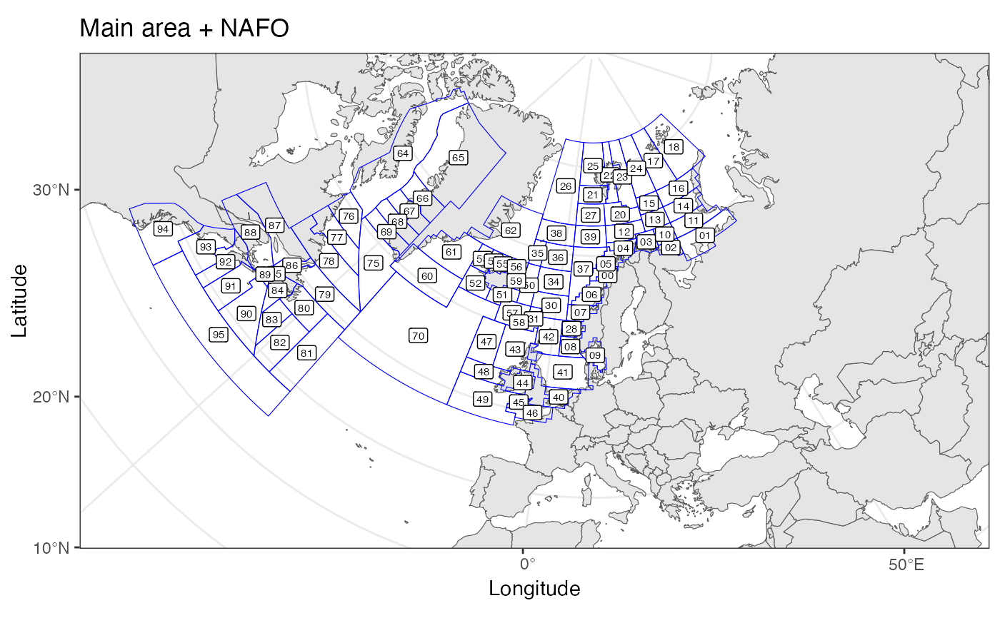
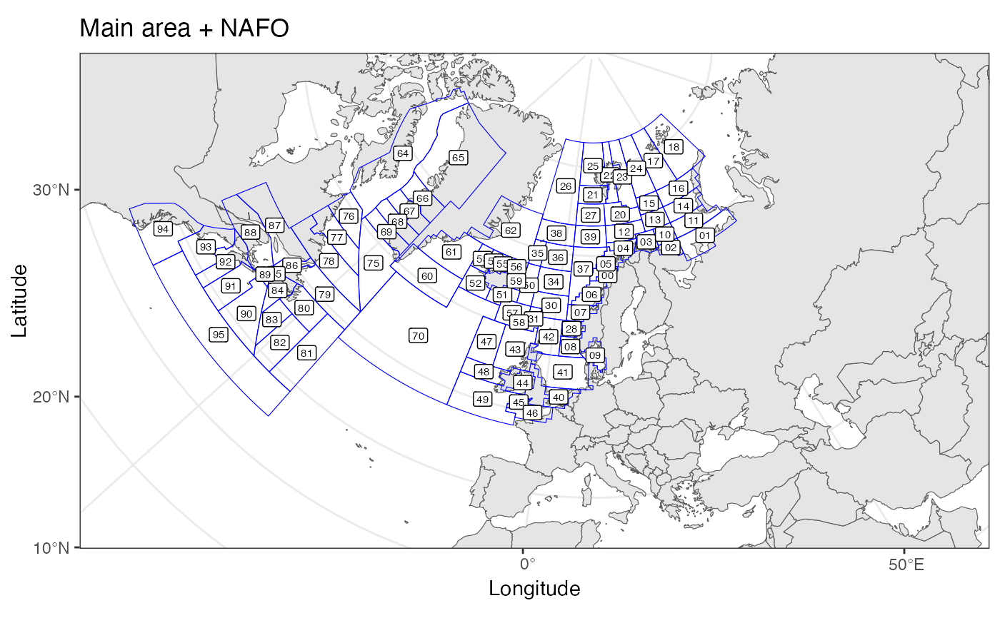

Plots area polygons on a map, may plot a set of positions as well.
Usage
plotArea(
data = NULL,
latCol = NULL,
lonCol = NULL,
groupCol = NULL,
areaDef = NULL,
areaNameCol = "StratumName",
areaLabels = is.null(data),
xlim = NULL,
ylim = NULL,
areaLabelSize = 2,
pointColor = "darkred",
pointShape = 23,
pointSize = 1,
title = "",
projection = NULL,
polygonColor = "blue"
)Arguments
- data
data.frame with any points to be plotted
- latCol
character() identifing column in 'data' that specify latitudes (WGS84)
- lonCol
character() identifing column in 'data' that specify longitudes (WGS84)
- groupCol
character() identifying column in 'daat' that specify grouping of points
- areaDef
sfdata.frame- areaNameCol
identifies column in 'areaDef' with label names for the areas
- areaLabels
logical whether to plot area labels
- xlim
x axis limits in degrees longitude
- ylim
y axis limits in degrees latitude
- areaLabelSize
size for any area labels
- pointColor
color of any points to be plotted.
- pointShape
ggplot2 shape for any points to be plotted
- pointSize
size for any points to be plotted
- title
plot title
- projection
proj4string or EPSG code specifying the desired projection, see
st_crs. Defaults to mercator projection.- polygonColor
color to be used for plotting polygons.
Details
Map ranges to plot are specified by 'xlim' and 'ylim'. These should always be given in lon/lat. if these are not given they will be derived in order to include all positions in 'data'. if 'data is not given they will be derived from the bounding box of 'areaDef'. To allow for flexible projection, some space will be added around 'xlim' and 'ylim'.
Both 'areaDef' and 'data' are optional, so the function may be used to plot position without an area defintion, or even to just plot maps if xlim and ylim are provided.
Colors can be specified as understood by ggplot2. E.g. one of those listed by colors.
Examples
# plot ICES areas with default projection
data(ICESareas)
plotArea(areaDef=ICESareas)
 data(mainareaFdir2018)
data(NAFOareas)
# plot mainarea and NAFO areas combined in a Lambert Conformal Conic projection.
plotArea(title="Main area + NAFO",
areaDef=rbind(mainareaFdir2018[,c("StratumName")],
NAFOareas[,c("StratumName")]),
projection="+proj=lcc +lat_1=43 +lat_2=62 +lat_0=30
+lon_0=10 +x_0=0 +y_0=0 +ellps=intl +units=m +no_defs")

data(mainareaFdir2018)
data(NAFOareas)
# plot mainarea and NAFO areas combined in a Lambert Conformal Conic projection.
plotArea(title="Main area + NAFO",
areaDef=rbind(mainareaFdir2018[,c("StratumName")],
NAFOareas[,c("StratumName")]),
projection="+proj=lcc +lat_1=43 +lat_2=62 +lat_0=30
+lon_0=10 +x_0=0 +y_0=0 +ellps=intl +units=m +no_defs")
